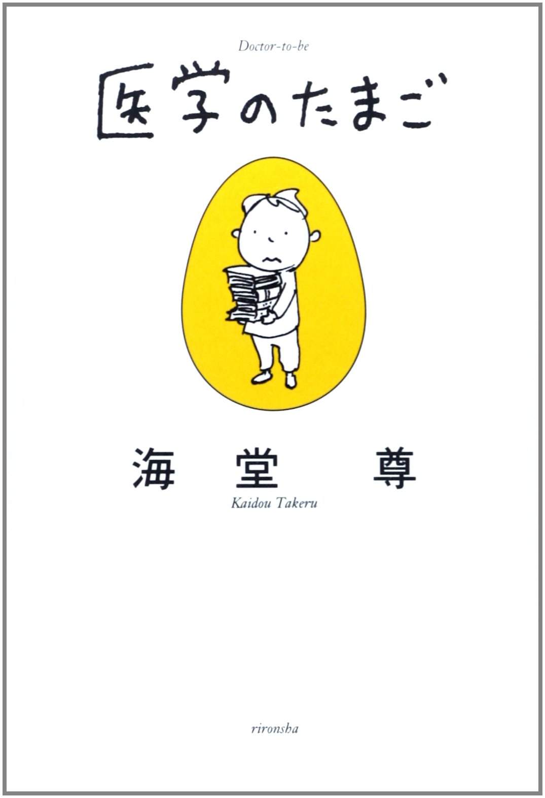
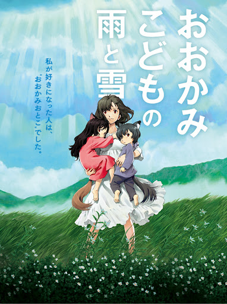
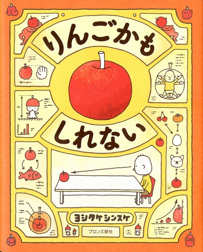

📗医学のたまご📗
天才的な能力を隠し持つ中学生・曽根崎薫が、ひょんなことから東城大学医学部で「スーパー中学生医学生」として研究に携わり、医療現場の不正や大人の思惑に仲間と共に立ち向かう物語

天才的な能力を隠し持つ中学生・曽根崎薫が、ひょんなことから東城大学医学部で「スーパー中学生医学生」として研究に携わり、医療現場の不正や大人の思惑に仲間と共に立ち向かう物語

人間とおおかみの顔を併せ持つ「おおかみこども」の姉弟、雪と雨を、母・花が田舎で育て上げる13年間の成長と自立を描いた感動作

テーブルの上の「りんご」を見た男の子が、「これはりんごじゃないかもしれない」と想像を膨らませる発想絵本